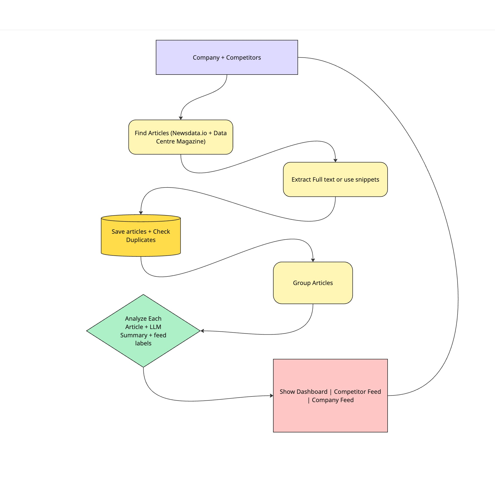

Discover
NewsData.io plus Data Centre Magazine.
A configurable PR dashboard that groups duplicate coverage, explains each story, and keeps the original evidence one click away.
Equinix · Digital Realty · Data centre industry
This is the full implementation path: discovery, extraction, persistence, grouping, analysis, and dashboard publication.
The current dashboard also includes the optional Industry feed. It uses the same saved articles and analysis flow.

NewsData.io plus Data Centre Magazine.
Save metadata first. Use full text when publishers allow it.
TF-IDF groups related reports. OpenRouter summarizes and labels relevance.
SQLite swaps in one complete snapshot for all three feeds.
25 NewsData + 23 Magazine articles merged into 39 stories. Same event from two outlets stays together with both links.
Equinix 9, competitors 9, industry 38 — including 23 industry-only. Total ≠ sum: one story can live in two feeds.
20 AI summaries + 19 visible keyword fallbacks at the 20-call cap. Snapshot survived container recreate unchanged.
Linux ARM64 · non-root · named volume verified. Counts prove the plumbing — not summary accuracy.
One Python application to build and deploy. Long refreshes occupy the initiating session.
Durable local results with no extra service. One process is the intended deployment.
Cheap, deterministic grouping. It can miss paraphrases or confuse similarly worded events.
Summary and three relevance labels in one call. Validation catches bad structure, not factual errors.
Settings stay reviewable and versionable. Users restart and refresh after changes.
Caps protect latency and API spend. Coverage is a recent sample, not an exhaustive archive.
SQLite stores status, start and finish times, source counts, and safe failure messages.
Container stdout shows startup and failures. Streamlit exposes a health endpoint.
140 tests pass locally and in Linux. Live checks cover both sources, OpenRouter, and volume persistence.
Missing today: structured application logs, distributed traces, metric dashboards, and automated alerts.
Emit JSON events with refresh ID, source, stage, duration, outcome, and safe error category.
Trace discovery, extraction, grouping, each model request, and atomic publication under one refresh.
Track snapshot age, refresh latency, articles per source, extraction success, fallback rate, model latency, tokens, and cost.
Alert on stale coverage, repeated source failure, high fallback rate, job backlog, and unusual API spend.
Label a real news sample. Evaluate grouping, dates, relevance, and summary accuracy before changing models.
Add authentication, managed secrets, API limits, source policies, and tested backups.
Add scheduling, durable retries, freshness alerts, source metrics, and cost tracking.
Use PostgreSQL and shared job coordination. Add FastAPI or a richer frontend when another client needs it.
Limits keep latency and cost predictable. Exceeding them yields partial results with labeled fallbacks — never silent failure or overwritten good snapshots.